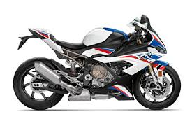
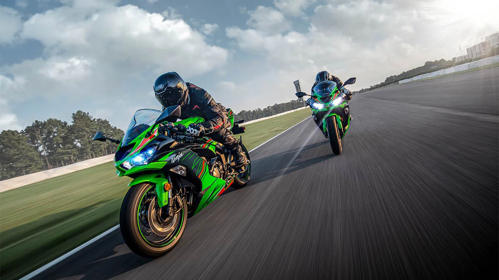

Top 10 mejores motos del mundo
- TOP 1º : Ducati Panigale V4 R 2023 : La Panigale V4 R 2023 de Ducati es lo más parecido que podrás experimentar a una moto de carreras, ya que está inspirada en MotoGP. 998 cc, que produce 207 CV
- TOP 2º : BMW M 1000 R 2023 : La 1000 R no podía faltar un año más, ya que nuevamente es una de las mejores motos deportivas de 2023. 999 cc refrigerado por agua, 205 CV 
- TOP 3º : Aprilia RS 660 Extrema 2023 : Este modelo se presentó en 2019 para cubrir el hueco entre los modelos RS y RSV4. Diseñada para estar en el top de las motos de peso medio, sigue contando con un bicilíndrico en paralelo DOHC de 659 cc, y refrigeración líquida que rinde 100 CV
- TOP 4º : Kawasaki Ninja ZX-6R 2023 : Desde su debut, la Ninja ha evolucionado hasta convertirse en una familia diversa de nueve modelos distintos que se dividen en tres categorías de motocicletas diferentes. En cuanto a su motor bicilíndrico en paralelo de 649 cc 
- TOP 5º : Yamaha YZF-R1M 2023 : Este modelo mantiene todas las características que la convierten en una de las mejores. Cuenta con un motor de 998 cc, con 4 cilindros en línea, y refrigeración líquida
- TOP 6º : Yamaha YZF-R7 : De las deportivas es la Yamaha YZF-R7, perteneciente a una nueva generación de supersport con el ADN de la serie R y el corazón de la exitosa MT-07. Un motor CP2 de 689 cc, con una potencia de 74 CV
- TOP 7º : QJ motor SRK 700 : Un modelo aún algo desconocido pero a tener en cuenta es la QJ motor SRK 700 que destaca por su precio y garantía: 6.962€ y 6 años, lo cual es bastante impresionante. 73 CV de potencia, 698 cc
- TOP 8º : Honda CB 750 Hornet : Su motor logra una magnífica potencia de 92 CV, y de 755 cc, lo que la diferencia de la mayoría de las naked de su rango de precio es su electrónica
- TOP 9º : Benelli TRK 702 : Como el tope de gama junto a su versión más off-road, la TRK 702 X, Su motor de 698 cc, con 70 CV de potencia. Estéticamente sigue la línea característica de la familia, con una tremenda habitabilidad y confort de marcha
- TOP 10º : Suzuki V-Strom 800 Tech : Sin embargo, se eliminan otras características para mantener un peso algo más ligero de 223 kg. Que nos garantiza una potencia de 84,3 CV. Además de su notable electrónica, el equipamiento de serie de la V-Strom Tech se complementa con una pantalla TFT de 5 pulgadas controlable desde el manillar, un USB tipo A, maneta de freno ajustable, pantalla de gran tamaño y un depósito de combustible de 20 litros para una gran autonomía.